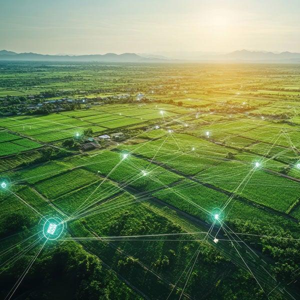

Every Drop Counts
Water Conservation
IoT irrigation delivers water according to actual crop and soil requirements.
Use Water Where It Matters
Instead of watering on a fixed schedule, smart irrigation responds to soil conditions and reduces unnecessary watering.
- Water only when soil moisture is low
- Reduce over-irrigation and runoff
- Monitor water usage
- Support sustainable agriculture

Technology Today. Greener Tomorrow.
Build a smarter irrigation system that helps farms use resources efficiently.
Back to Home